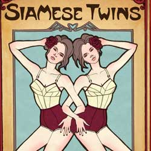

|
| Home|Talent|Cosmetic|Deformity|Abnormal|Ethnological |
Conjoined TwinsConjoined twins are a rare phenomenon, the occurrence is estimated to range from 1 in 49,000 births to 1 in 189,000 births, with a somewhat higher incidence in Southwest Asia, Africa and Brazil.Approximately half are stillborn, and a smaller fraction of pairs born alive have abnormalities incompatible with life. The condition is more frequently found among females, with a ratio of 3:1. Two contradicting theories exist to explain the origins of conjoined twins. The older theory is fission, in which the fertilized egg splits partially. The second and more generally accepted theory is fusion, in which a fertilized egg completely separates, but stem cells (which search for similar cells) find like-stem cells on the other twin and fuse the twins together. Conjoined twins share a single common chorion, placenta, and amniotic sac, although these characteristics are not exclusive to conjoined twins as there are some monozygotic but non-conjoined twins that also share these structures in utero. The most famous pair of conjoined twins was Chang and Eng Bunker (1815–1880), Thai brothers born in Siam, now Thailand. They travelled with P.T. Barnum's circus for many years and were labeled as the Siamese Twins. Chang and Eng were joined by a band of flesh, cartilage, and their fused livers at the torso. In modern times, they could have been easily separated. Due to the brothers' fame and the rarity of the condition, the term "Siamese twins" came to be used as a synonym for conjoined twins. Conjointed Twins were like other deformed freaks, put on a stage for the public to observe. |